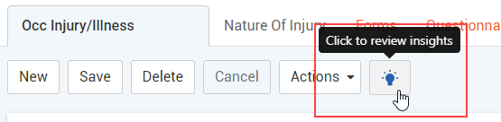
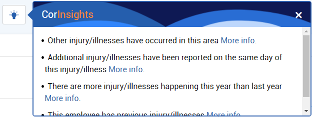

“CorInsights” uses existing data to provide key insights about your organization’s health and safety trends. If added to a form’s layout, a lightbulb icon is shown on the form. If insights are available for the record, the icon will be blue:

When you click the icon, the CorInsights window displays insights inferred from your organization's data. Some of these may include a “More Info” link that provides further details: depending on the insight, this may be a list of records or a graphical display of data that contributed to the insight.
